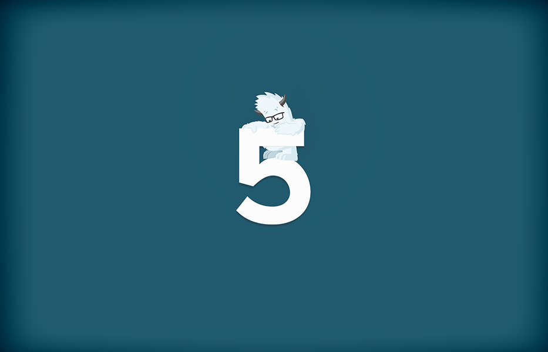
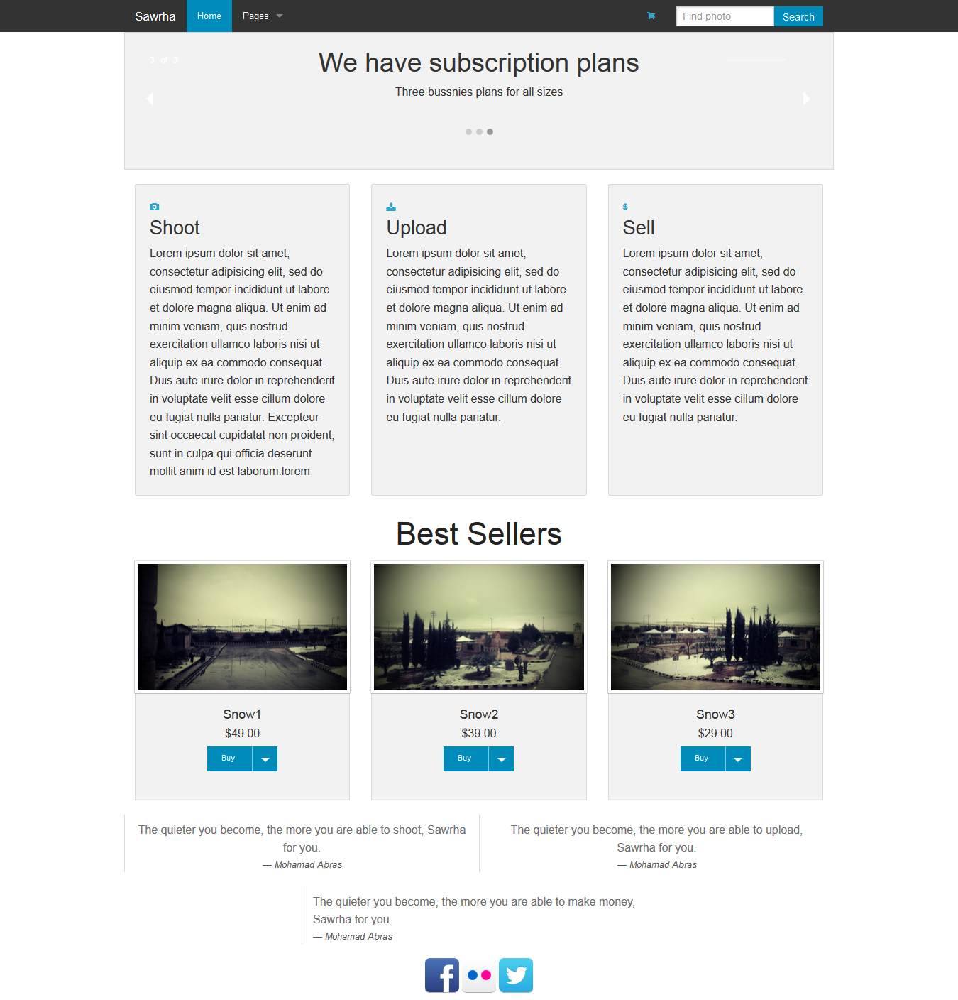
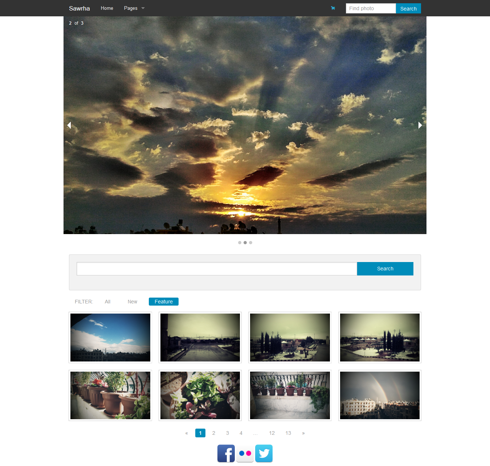

Foundation هو إطار عمل متجاوب (responsive) لجهة العميل (client-side)، أنشأتهُ شركة Zurb عام 2011 لتسهيل إنشاء المواقع، يُمكّنك Foundation من بناء موقعك بشكل سريع ممّا يزيد من إنتاجية التطوير، حيث يُقدم الإطار نصوص CSS جاهزة وقابلة للتعديل لتناسب أغلب المشاريع.
تُقدم شركة Zurb حلولًا للمطوّرين بجانب إطار العمل Foundation، حيث هناك العديد من الإضافات التي تختبرها Foundation في مختبراتها والتي تطلق عليها اسم playground والتي تحتوي على خطوط الأيقونات (Icon Fonts)، وأيقونات الشبكات الاجتماعية (Social Web Icons)، والرسوم البيانية، ومخططات لإنشاء نماذج بدئيّة (prototypes)، وقوالب البريد الالكتروني، والعديد منها بإمكانك أن تجده هنا، كما تُقدم شركة Zurb حزمة تطبيقات ويب مجانية ومدفوعة.
أصبح Foundation في الإصدار الخامس أسرع وأسهل استخدامًا، وإن كنتَ قد تعاملت مع الإطار في إصداره الرابع فأنت مع الإصدار الخامس وكأنك تنظر إلى إطار مختلف تمامًا، إذا قدّم Foundation في الإصدار الخامس الكثير من التحسينات على مستوى الأداء والمظهر، فانتقل من استخدام مكتبة Zepto إلى jQuery، وهذا الانتقال من شأنه أن يقدمَ أداءً أفضل، والتحسينات طالت حتى التوثيق الرسمي حيث أصبح سهل القراءة وأكثر تنظيمًا.
يدعم Foundation جميع المتصفحات ما عدا IE في إصداره السابع والثامن، والصورة التالية من التوثيق الرسمي تُوضح توافق الإطار مع مختلف المتصفحات.

دائمًا هناك مقارنات وحروب لاختيار الأفضل وهذه المُقارنات قائمة منذ الأزل ولن يربح بها أحد فدائمًا ما تجد أسئلة من نوع: هل متصفح فيرفُكس أفضل أم Chrome؟، هل لغة Ruby أفضل أم PHP؟ (Ruby طبعًا :))، والقائمة تطول، والإجابة تختلف من مجال لآخر، ولكنّ القاعدة العامة أنّه ما من شيء أفضل بالمُطلق، أمّا للإجابة على سؤال هل Foundation أفضل أم Bootsrap؟ فأقول: الإجابة ليست بنعم أو لا، الأفضل هو الأفضل للمشروع، ويجب على المطوّر الاطلاع على الإطارين معًا والابتعاد عن الاعتماد المُطلق على أحدهما، فالإطاران يملُكان شهرةً واسعةً تجعل منهما لاعبين قويّين في عالم تطوير الويب، ناهيك على أنّ الإطارين يتشابهان في الكثير من المفاهيم والأفكار، ممّا يجعل تعلّمهما أمرًا يسيرًا، ولكن تذكّر عند اختيار أيّ إطار عمل يجب على الإطار أن يملك توثيقًا رسميًا جيدًا ووجودًا قويًّا على الويب.
إن كنت من مُحبي الأرقام، الترتيب التالي يُوضح أشهر أطر العمل تقييمًا على موقع GitHub:
Bootstrap: أكثر من 76000 نجمة.
Foundation: أكثر من 19000 نجمة.
Semantic UI: أكثر من 14000 نجمة.
Pure: أكثر من 10000 نجمة.
Skeleton: أكثر من 7000 نجمة.
UIkit: أكثر من 4000 نجمة.
بإمكانك تحميل الإطار من هنا بنسخته الكاملة أو تخصيص التحميل حسب الحاجة، في حالتنا سوف نستخدم النسخة الكاملة من الإصدار ذي الرقم 5.5.0. في حال اخترت تخصيص التحميل، وهو أمرٌ قد تفعله لتصغير حجم ملف الإطار، فعليك الانتباه عند تحميل النسخة الأحدث أن تختار ذات التخصيصات التي اخترتها سابقًا.
في المجلد المُسمى css يوجد ثلاثة ملفات CSS، وهي foundation.css ويحتوي نسخة كاملة مقروءة من أنماط الإطار، والملف foundation.min.css والذي يحتوي على نسخة كاملة مُقلّصة (minified) من أنماط الإطار، حيث تم حذف جميع الفراغات والتعليقات لتصبح أصغر حجمًا، والملف الثالث هو normalize.css ويُستخدم عادةً لتسوية المتصفحات على سوية واحدة، وهو ليس خاصًّا بـFoundation.
في المجلد js سوف تجد ملفّ JavaScript يحمل الاسم foundation.min.js وهو بشكل مُقلّص، أي غير مقروء، ويحتوي كافة خصائص الإطار، أمّا المجلد foundation ففيه كافة محتويات الملف السابق ولكن بشكل مُجزّأ، بحيث يكون لكل إضافة ملف مُستقل، وكلّ من هذه الملفّات مقروء وبإمكانك استخدام أيٍّ من هذه الملفات دون الآخر، أمّا المجلد vendor فيحتوي ملفات المكتبات المستخدمة في الإطار مثل مكتبة jQuery ومكتبة Modernizr والتي تُستخدم في استكشاف ميزات HTML5 وCSS التي يدعمها المتصفح.
سوف نعمل طيلة السلسلة على مشروع متجر بسيط لبيع الصور الفوتوغرافية نُسمّيه "صوّرها"، نستعرض من خلاله ميزات هذا الإطار، والميزات التي يُمكننا تطبيقها عليه، لا تتطرق السلسلة إلى أساسيات CSS ولا JavaScript، وسيقتصر التركيز الإطار نفسه.
سنستدعي ملف الإطار والمكتبات المُساعدة في أعلى مُستند HTML في الوسم <head> بالشكل التالي:
سنستدعي ملف الإطار الكامل وبالحجم المُصغر ومكتبة jQuery في أسفل مُستند HTML، لتحميل الصفحة بشكل أسرع دون انتظار ملفات JavaScript.
<link rel="stylesheet" href="css/foundation.min.css"/>
<link rel="stylesheet" href="css/mycss.css"/>
<script src="js/vendor/modernizr.js"></script>
...
<!--أسفل الصفحة-->
<script src="js/vendor/jquery.js"></script>
<script src="js/foundation.min.js"></script>
<script>
$(document).foundation();
</script>
لست مُقيدًا بتحميل كافة ملف الإضافات الخاص بـJavaScript، بل بإمكانك اختيار إضافة دون أخرى، فلا حاجة لتحميل ملف الإطار بحجمه الكامل بل يُمكنك اختيار الإضافة التي تريدها لتناسب احتياجات الموقع.
<script src="/js/foundation.dropdown.js"></script>
<script src="/js/foundation.tab.js"></script>
يتكوّن المتجر من خمسِ صفحات هي:
الهدف من المتجر هو عرض ميزات إطار العمل Foundation وليس تصميم المتجر بحد ذاته، فالمتجر مُصمّمٌ بأبسط الإمكانيات وللتوضيح فقط. سوف نستخدم متصفح Chrome طوال السلسلة ولك حريّةُ استخدام متصفحك المُفضل (أقصد Chrome :)) والصور التالية هي للصفحات الخمس التي سوف نحصل عليها بعد انتهاء السلسلة.




تعرفنا من خلال هذه المُقدمة البسيطة على إطار العمل Foundation بشكل عام، ولما عليك اختياره، وشرحنا التحميل وطريقة الإعداد، وأخذنا فكرة عامة عن المتجر الذي سوف نتعامل معه طيلة السلسلة. في المقالة الثانية سوف نبدأ بالدخول في التفاصيل والشرح الفعلي لميزات الإطار، وسوف نبدأ بالنظام الشبكي وكل ما يتعلق به وكيفية التطبيق على متجرنا مع عرضٍ للأمثلة من شيفرةٍ برمجية وصورٍ توضيحية.